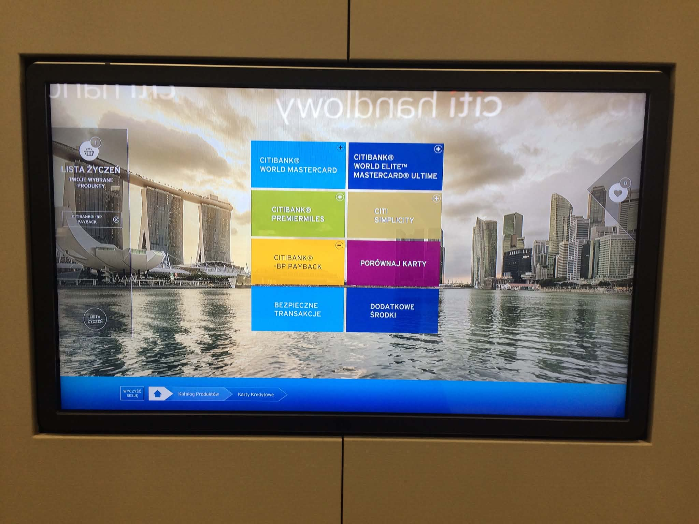

Back to story
2015 / short case
Citi Bank Handlowy calculators.
An early banking UX case about touchscreen applications, credit-card calculators, loyalty-point calculators, and interaction prototypes.

Draft narrative
The product lesson
This can stay a short archive case. Its value is showing an early pattern: financial products often hide value inside rules, thresholds, and eligibility logic, so UX has to make the decision visible.
Sections to fill
Case-study shape
- What users needed to calculate or compare.
- How the interaction prototype clarified the decision.
- What constraints came from the touchscreen context.
- What can be shown publicly without exposing client material.